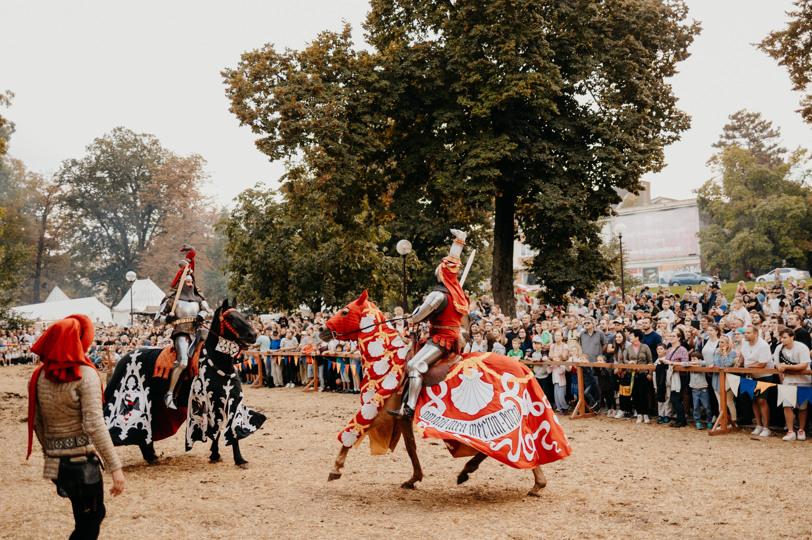
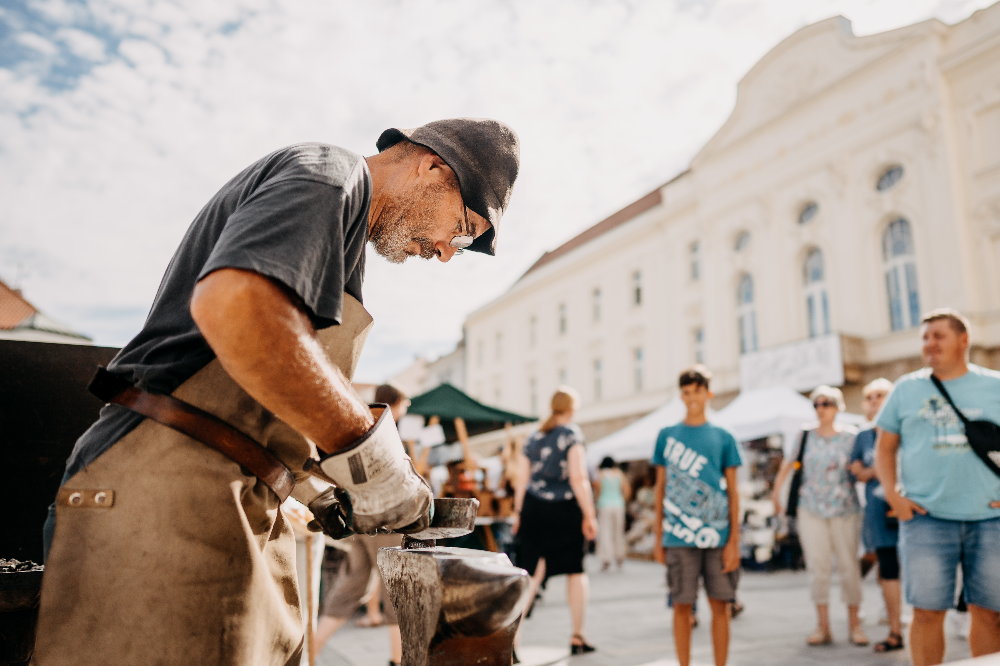

Trnavský jarmok 2026
Jarmočné podujatia
Šesť svetov, jeden jarmok. Objavte všetky časti trnavského sviatku.
Trnavský jarmok 2026 ponúka bohatý program naprieč celým centrom mesta. Od stredovekých rytierov cez ľudovú hudbu až po rozprávkových hrdinov – každý tu nájde svoje.

StredovekStredovek pod hradbami
Stredoveká promenáda v Sade Antona Bernolaka ožíva rytiermi, šermiarmi, kuchármi a dvorskými tanečníkmi. Historická bitka, rytiersky turnaj na koňoch a fakľový sprievod k Severnej veži.
Zobraziť program → Veselica
Veselica
Ľudová veselica
Na Námestí SNP zahrajú cimbalistky, gajdoši a ľudové kapely z celého regiónu. Tanec pod holým nebom, autentické kroje a vôňa slivovice – tak sa kedysi slavil jarmok.
Zobraziť program → Zábava
Zábava
Kolotoče a atrakcie
Klasické jarmočné kolotoče, hracie automaty, cukrová vata a popcorn – v centre mesta. Pre deti aj dospelých, celý deň až do noci.
Viac info → Rozprávky
Rozprávky
Rozprávkový svet
Červík Ervín, Víla Amálka, princezné, rytieri a indiáni čakajú deti v Ružovom parku. Divadelné predstavenia, tvorivé dielničky a fotenie s rozprávkovými hrdinami zadarmo.
Zobraziť program → Trojičné
Trojičné
Koncerty na Trojičke
Hlavné pódium jarmoku. Každý deň od poobedia do noci – tanečné skupiny, kapely a hviezdy ako Bystrik, Hex, Zuzana Smatanová a Bukasový Masív. Vstup voľný.
Zobraziť program →
RemesláZaži remeslá
Remeselný trh na pešej zóne a Tvorivý trh v Kreatívnom centre. Hrnčiari, tkáči, rezbári, kováči a ďalší majstri predvádzajú svoju prácu a predávajú originálne výrobky.
Viac info →Chcete vidieť celý program?
Prehľadný harmonogram všetkých podujatí s filtrom podľa dňa a kategórie.
Zobraziť program